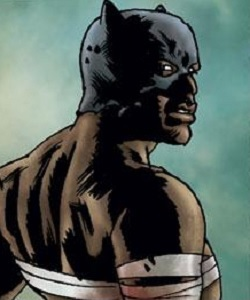

The story behind Marvel Zombies takes place on an alternate earth. An unknown hero come through a portal, sent by an unseen force known as the hunger.
He brings forth a disease that infects the Marvel heros and turns them into flesh craving zombies.
The zombies aren't fully braindead though, they keep their memories and abilities. They also remain conscious as long as they eat enough flesh.
Not everyone is infected though, some survivors remain. They try to find a cure to the disease against all odds.
Eventually, the zombies eat all life in their Universe. Which leads them to invade other universes, eating all life.
The Survivors of Marvel Zombies are:
Black Panther(Left) is injured by Zombie Ant-Man, who keeps him trapped in basement and feeds on him whenever he pleases. He eventually escapes and becomes king of New Wakanda.
Forge(Middle)is the one who saves Black Panther and treats his wounds. He's one of the key factors of earth being rebuilt.
Wasp(Right) became zombified early in the story, but regains her consciousness after not eating flesh for a long time. She also tries to help humanity rebuild.